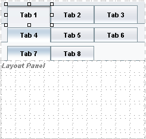

The Tab Set component
 in
the Palette's Layout category is a container for a set of Tab components.
in
the Palette's Layout category is a container for a set of Tab components.
Typical uses of a tab set are:
You can set Tab Set properties in the component's Properties window.
A Tab Set component contains Tab Components  , and Tab components can contain other Tab components. You can see these components displayed as hierarchical nodes in the Navigator window after you add a Tab Set to your page.
, and Tab components can contain other Tab components. You can see these components displayed as hierarchical nodes in the Navigator window after you add a Tab Set to your page.
You can add a new tab to a tab set in two ways, by right-clicking the Tab Set component and choosing Add Tab or by dropping a new tab component on the Tab Set or on a Tab component.
You can drop a new tab component on a tab set in the Visual Designer to the right or left of existing tabs to create a new tab at that level. The tabs in a tab set can also be containers for other tabs. If you drop a Tab component on an existing tab, the new tab becomes a child of the tab on which you dropped it. The maximum number of levels for tabs is three.
For example, the following figure shows a tab set with three levels of tabs. Tab 1 has three child tabs, Tab 4, Tab 5, and Tab 6. Tab 4 has two child tabs, Tab 7 and Tab 8.

The tab set component determines which tab is rendered as selected, storing the value in the selected property. By default, the selected property is set to the first tab created for the component. If you click a tab while designing your web page, that tab becomes the selected tab. You can tell during design time that a tab is selected because its color changes, as shown in the previous figure, in which Tab 1, Tab 4, and Tab 7 have been selected.